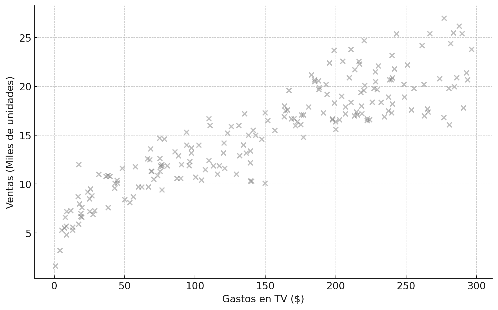
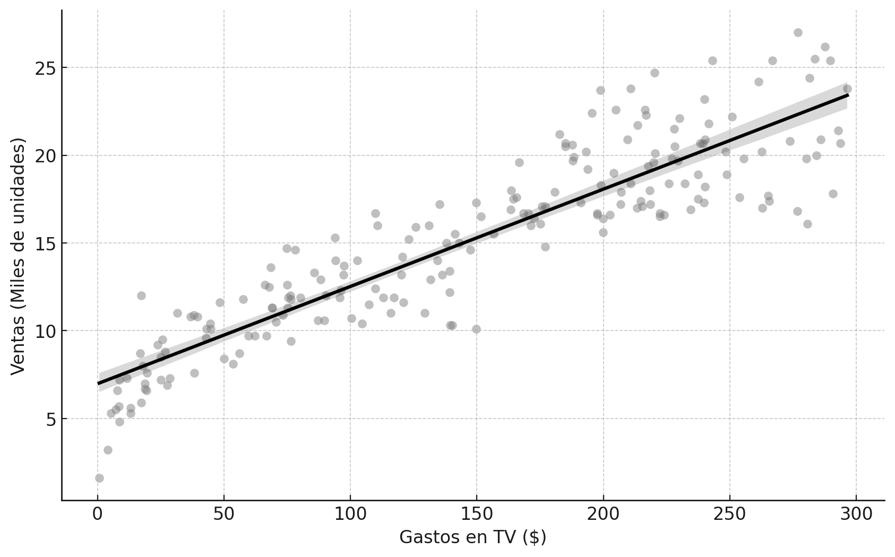
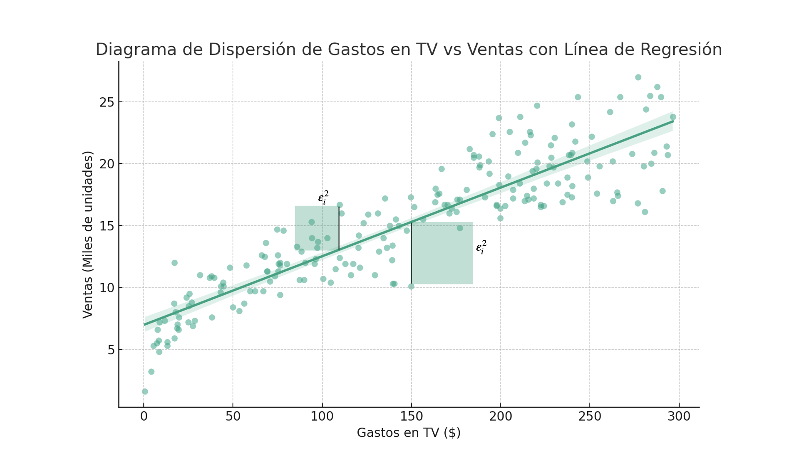

Una guía para entender y hacer modelos de Regresión Lineal#
“I know I’m stereotypical barbie and therefore don’t form conjectures concerning causality of adjacent unfolding events. But some things have been happening that might be related” — Barbie (2023)
La regresión lineal es la base de los modelos de inferencia causal.
Hay una razón por la que todos los libros de econometría y de ciencia de datos lo cubren. Se trata del modelo por el que debes comenzar antes de explorar modelos más complejos.
No hay nada de malo en usar redes neuronales o modelos de random forest en tu proyecto (actualmente está de moda hacer transición de economista a Data Scientist, y alguien que estudia econometría ya lleva un buen avance en los modelos supervisados), pero si usas regresión lineal, tus modelos tendrán los siguientes beneficios:
Mayor parsimonia. Entre más simple es el modelo, menos problemas te va a causar.
Serán más fáciles de interpretar. Si necesitas comunicar tus resultados a un jefe o un cliente, necesitas poder decir claramente lo que tus datos significan y las limitaciones.
Pruebas de robustez. Cuando un modelo pasa pruebas y demuestra que es robusto, podrás tener más confianza de usarlo en tus predicciones.
No es magia. Hay teoremas muy sólidos que ayudan a que entendamos lo que funciona y cuándo funciona.
Este capítulo se trata de sentar esas bases sólidas.
El modelo de mínimos cuadrados ordinarios con dos variables#
Comencemos con el modelo básico. Tienes una variable \(X\) y deseas conocer el efecto que tiene sobre \(Y\). La variable \(X\) podría ser el gasto en una campaña publicitaria por Televisión, mientras que \(Y\) son las ventas de nuestro producto.
Si tienes suficientes combinaciones de las dos variables, puedes plantear un modelo sobre su comportamiento. Usaremos la base de datos de publicidad, disponible libremente en kaggle.com. El siguiente código carga la base de datos directamente del repositorio y muestra un diagrama de dispersión entre los gastos en publicidad por TV y las ventas en millones de unidades.
import pandas as pd
import matplotlib.pyplot as plt
# Cargar los datos
data = pd.read_csv('../../data/advertising.csv')
# Crear un diagrama de dispersión
plt.figure(figsize=(10, 6))
plt.scatter(data['TV'], data['Sales'], alpha=0.5)
plt.title('Diagrama de Dispersión de Gastos en TV vs Ventas')
plt.xlabel('Gastos en TV ($)')
plt.ylabel('Ventas (Miles de unidades)')
plt.grid(True)
plt.show()

Este es un ejemplo muy claro donde la regresión lineal es el modelo ideal para nosotros: los puntos siguen un patrón muy claro visualmente.
Lo que nos dice la regresión lineal es que existe una línea que se ajusta a los datos. No necesitamos que el ajuste sea perfecto (si tuviéramos un ajuste perfecto no necesitaríamos de modelos estadísticos). Es normal pensar que hay muchos factores que afectan las ventas además del gasto publicitario, desde el clima hasta el día del mes pueden generar variaciones.
Así se ve nuestra línea de regresión.
import seaborn as sns
plt.figure(figsize=(10, 6))
sns.regplot(x='TV', y='Sales', data=data, scatter_kws={'alpha':0.5})
plt.title('Diagrama de Dispersión de Gastos en TV vs Ventas con Línea de Regresión')
plt.xlabel('Gastos en TV ($)')
plt.ylabel('Ventas (Miles de unidades)')
plt.grid(True)

Este tipo de línea se genera con un modelo lineal, donde cada punto es producto de una función de tipo
El punto \(i\) se ubica en la coordenada \((X_{i}, Y_{i})\). El término \(\varepsilon_{i}\) es el error, la diferencia entre el punto y la línea. Los términos \(\beta_{0}\) y \(\beta_{1}\) (se lee beta-cero y beta-uno) son los parámetros de una función lineal.
Nota que en algunos puntos, la línea de regresión “se equivoca” hacia arriba y en otros puntos hacia abajo. Cada punto que compone la línea de regresión es una predicción del valor de \(Y_{i}\) dado \(X_{i}\), donde \(\varepsilon_{i}\) es la diferencia, a la que llamamos el residual.

El modelo lineal tiene la ventaja de que sólo con dos parámetros podemos definir toda la línea.
Si \(\beta_{0}=6.97\) y \(\beta_{1}=0.0554\), entonces un valor de \(X_{i}=\$150\) en gasto de publicidad por TV implica ventas por \(15.29\).
def sales(tv):
b0 = 6.97
b1 = 0.0555
return b0 + b1 * tv
sales(150)
15.294999999999998
El método de Mínimos cuadrados ordinarios#
El método de Mínimos Cuadrados Ordinarios (OLS, por sus siglas en inglés) es el método más popular para resolver el modelo de regresión lineal. Se prefiere porque es simple y muy eficiente.
Bajo ciertas condiciones, OLS se considera el mejor estimador lineal insesgado. El acrónimo en inglés es BLUE (Best Linear Unbiased Estimator):
Best (Mejor): Significa que tiene la menor varianza de las estimaciones.
Linear (Lineal): El estimador es una función lineal de los valores observados.
Unbiased (Insesgados): El estimador le atina al verdadero valor del parámetro en promedio.
Estimator (Estimador): Es la regla o fórmula que indica cómo estimar los parámetros del modelo.
OLS tiene el objetivo de encontrar los valores de \(\beta_{0}\) y \(\beta_{1}\) que minimizan la suma de los errores al cuadrado.

Obteniendo los estimadores de OLS#
Pasemos la ecuación a notación vectorial. Sea \(\mathbf{Y}\) el vector de observaciones de tamaño \(n\times1\), \(\mathbf{X}\) una matriz de tamaño \(n\times k\), \(\boldsymbol{\beta}\) un vector de tamaño \(k+1\times1\), y \(\boldsymbol{\varepsilon}\) un vector de errores de tamaño \(n\times1\).
Nuestro modelo se puede representar de forma compacta como \(\mathbf{Y} = \mathbf{X}\boldsymbol{\beta} + \boldsymbol{\varepsilon}\).
La suma de los residuales al cuadrado (RSS) la expresamos como \(\mathbf{e}'\mathbf{e}\):
Las condiciones de primer orden:
De donde obtenemos las ecuaciones normales:
Y por lo tanto:
Esto es lo que tu computadora calcula cuando le pides que haga una regresión lineal con tus datos.
Hagamos un ejercicio en Python con los datos de publicidad.
import numpy as np
import pandas as pd
ruta_archivo = '../../data/advertising.csv'
datos = pd.read_csv(ruta_archivo)
tv = datos['TV'].values
ventas = datos['Sales'].values
X = np.column_stack((np.ones(tv.shape[0]), tv))
XX_inv = np.linalg.inv(X.T @ X)
beta_hat = XX_inv @ X.T @ ventas
intercepto, pendiente = beta_hat
print("Intercepto:", intercepto)
print("Pendiente para TV:", pendiente)
Intercepto: 7.688157635196536
Pendiente para TV: 0.04479276877051332
Propiedades de los estimadores de Mínimos Cuadrados#
Podemos deducir varias propiedades de los estimadores. Verifiquemos cada una con Python.
Los valores observados de \(\mathbf{X}\) no están correlacionados con los residuales#
Que \(\mathbf{X}'\mathbf{e}=0\) implica que cada columna de la matriz \(\mathbf{X}\) tiene correlación muestral de cero con los residuales.
predicciones = X @ beta_hat
residuales = ventas - predicciones
correlacion = np.corrcoef(tv, residuales)[0, 1]
print("Correlación entre los valores observados de TV y los residuales:", correlacion)
Correlación entre los valores observados de TV y los residuales: -4.3280871388753426e-16
El coeficiente de correlación es prácticamente cero. Esto comprueba la propiedad.
La suma de los residuales es igual a cero#
suma_residuales = np.sum(residuales)
print("Suma de los residuales:", suma_residuales)
Suma de los residuales: 3.730349362740526e-14
La media muestral de los residuales es cero#
media_residuales = np.mean(residuales)
print("Media de los residuales:", media_residuales)
Media de los residuales: 1.865174681370263e-16
El hiperplano de la regresión pasa a través de las medias de los valores observados#
promedio_tv = np.mean(tv)
promedio_ventas = np.mean(ventas)
ventas_predichas_en_promedio_tv = beta_hat[0] + beta_hat[1] * promedio_tv
print("Promedio de TV:", promedio_tv)
print("Promedio de Ventas:", promedio_ventas)
print("Ventas predichas cuando TV es igual a su promedio:", ventas_predichas_en_promedio_tv)
Promedio de TV: 143.8255
Promedio de Ventas: 14.1305
Ventas predichas cuando TV es igual a su promedio: 14.1305
Los valores de predicción de \(\mathbf{Y}\) no están correlacionados con los residuales#
correlacion_predichos_residuales = np.corrcoef(predicciones, residuales)[0, 1]
print("Correlación entre los valores predichos de Ventas y los residuales:", correlacion_predichos_residuales)
Correlación entre los valores predichos de Ventas y los residuales: -4.0041500780004977e-16
La media de las predicciones de \(\mathbf{Y}\) será igual que la media de los \(\mathbf{Y}\) observados#
media_predicciones = np.mean(predicciones)
print("Media de los valores predichos:", media_predicciones)
print("Media de los valores observados (Ventas):", promedio_ventas)
Media de los valores predichos: 14.1305
Media de los valores observados (Ventas): 14.1305
El teorema de Gauss-Márkov y sus supuestos#
“I’m BLUE, da-ba-dee-da-ba-day” — Eiffel 65 feat. Gabry Ponte
El teorema de Gauss-Márkov establece que si tu modelo de regresión lineal satisface cinco supuestos básicos, entonces la regresión por mínimos cuadrados producirá estimaciones insesgadas con la varianza mas pequeña de todos los estimadores lineales posibles: BLUE.
Estos son los supuestos del Teorema de Gauss-Márkov#
Supuesto #1: Los parámetros deben ser lineales#
Si hiciéramos un diagrama de dispersión, deberíamos ver algo parecido a lo que mostró el diagrama de dispersión del gasto en TV contra las ventas.

Sin embargo, no debemos dejarnos engañar. La regresión lineal la podemos hacer con múltiples dimensiones. En ocasiones, las variables adicionales hacen que la linealidad tenga sentido.

Supuesto #2: Los datos deben ser tomados de un muestreo aleatorio de la población#
Este es un supuesto básico: nuestra muestra debe ser aleatoria. Si no lo hacemos de esta manera, nos arriesgamos a encontrar sesgos en nuestras bases de datos.
Supuesto #3: No hay colinealidad#
Los regresores no están correlacionados perfectamente entre sí. En nuestro modelo de álgebra lineal, esto se determina cuando \(\mathbf{X}\) es una matriz de rango completo (si \(\mathbf{X}\) no tiene rango completo, no se puede calcular la matriz \((\mathbf{X}^\top \mathbf{X})^{-1}\)).
import numpy as np
import pandas as pd
ruta_archivo = '../../data/advertising.csv'
datos = pd.read_csv(ruta_archivo)
tv = datos['TV'].values
radio = datos['Radio'].values
newspaper = datos['Newspaper'].values
ventas = datos['Sales'].values
X = np.column_stack((np.ones(tv.shape[0]), tv, radio, newspaper))
rango_X = np.linalg.matrix_rank(X)
print("Rango de la matriz X:", rango_X)
num_columnas = X.shape[1]
es_rango_completo = rango_X == num_columnas
print("¿Es la matriz X de rango completo (sin multicolinealidad)?", es_rango_completo)
Rango de la matriz X: 4
¿Es la matriz X de rango completo (sin multicolinealidad)? True
La forma tradicional de verificar este supuesto es revisar las correlaciones entre las variables.
matriz_correlacion = datos[['TV', 'Radio', 'Newspaper']].corr()
print("Matriz de correlación:\n", matriz_correlacion)
Matriz de correlación:
TV Radio Newspaper
TV 1.000000 -0.026854 -0.046244
Radio -0.026854 1.000000 -0.123805
Newspaper -0.046244 -0.123805 1.000000
La correlación más alta es entre el gasto en periódico y el de radio, con un 35%. Calculemos también el factor de inflación de la varianza (VIF):
from statsmodels.stats.outliers_influence import variance_inflation_factor
def calcular_vif(X):
vif = pd.DataFrame()
vif["variables"] = X.columns
vif["VIF"] = [variance_inflation_factor(X.values, i) for i in range(X.shape[1])]
return vif
vif_df = calcular_vif(datos[['TV', 'Radio', 'Newspaper']])
print("VIF para cada variable:\n", vif_df)
VIF para cada variable:
variables VIF
0 TV 2.640007
1 Radio 2.554529
2 Newspaper 2.497519
Todos los factores están por debajo de 5, por lo que no hay problemas de multicolinealidad en nuestros datos.
Supuesto #4: Exogeneidad#
También se le conoce como el supuesto de media condicional cero, y es probablemente el supuesto más crítico para la inferencia causal:
La manera más práctica de comprobarlo es con un gráfico de las predicciones con los residuales.

import pandas as pd
import statsmodels.api as sm
import matplotlib.pyplot as plt
file_path = '../../data/advertising.csv'
data = pd.read_csv(file_path)
X = data[['TV', 'Radio', 'Newspaper']]
y = data['Sales']
X = sm.add_constant(X)
model = sm.OLS(y, X).fit()
predictions = model.predict(X)
residuals = model.resid
plt.figure(figsize=(10, 6))
plt.scatter(predictions, residuals, color='black')
plt.axhline(y=0, color='black', linestyle='--')
plt.xlabel('Predicted Sales')
plt.ylabel('Residuals')
plt.title('Residuales vs. Predicción de ventas')
plt.grid(True, which='both', linestyle='--', linewidth=0.5)
plt.show()
Este gráfico muestra que no hay un patrón definido, lo cual es bueno.
Supuesto #5: Homoscedasticidad#
La varianza del error es constante para todos los valores de los regresores.
import seaborn as sns
data = pd.read_csv('../../data/advertising.csv')
X = data[['TV', 'Radio', 'Newspaper']]
y = data['Sales']
X = sm.add_constant(X)
model = sm.OLS(y, X).fit()
residuals = model.resid
fitted = model.fittedvalues
plt.figure(figsize=(10, 6))
sns.residplot(x=fitted, y=residuals, color='black', lowess=True)
plt.xlabel('Fitted values')
plt.ylabel('Residuals')
plt.title('Residuals vs. Fitted Values')
plt.axhline(y=0, color='black', linestyle='--')
plt.show()
fig, axes = plt.subplots(1, 3, figsize=(18, 6))
for i, col in enumerate(['TV', 'Radio', 'Newspaper']):
sns.scatterplot(x=data[col], y=residuals, color='black', ax=axes[i])
axes[i].set_title(f'Residuals vs {col}')
axes[i].set_xlabel(col)
axes[i].set_ylabel('Residuals')
axes[i].axhline(y=0, color='black', linestyle='--')
plt.tight_layout()
plt.show()

Usemos la prueba Breusch-Pagan para comprobar formalmente. La hipótesis nula es que los errores del modelo tienen varianza constante.
from statsmodels.stats.diagnostic import het_breuschpagan
bp_test = het_breuschpagan(residuals, model.model.exog)
bp_test_statistic, bp_test_pvalue = bp_test[:2]
bp_test_statistic, bp_test_pvalue
(1.2954799797387784, 0.7302066788056134)
Como el p-value es mayor a 0.05, no podemos rechazar la hipótesis nula de homoscedasticidad.
Cómo interpretar el reporte de regresión#
Hay dos usos para un modelo de regresión: predicción o inferencia.
En la inferencia, estamos tratando de saber por qué una variable se comporta de cierta manera. En predicción, estamos intentando construir un modelo que reconstruya un resultado con información dada.
Hagamos la regresión lineal de un modelo por mínimos cuadrados:
import statsmodels.api as sm
X = data[['TV', 'Radio', 'Newspaper']]
y = data['Sales']
X = sm.add_constant(X)
model = sm.OLS(y, X).fit()
model.summary()
| Dep. Variable: | Sales | R-squared: | 0.883 |
|---|---|---|---|
| Model: | OLS | Adj. R-squared: | 0.881 |
| Method: | Least Squares | F-statistic: | 492.1 |
| Date: | Mon, 02 Feb 2026 | Prob (F-statistic): | 6.04e-91 |
| Time: | 13:32:16 | Log-Likelihood: | -390.57 |
| No. Observations: | 200 | AIC: | 789.1 |
| Df Residuals: | 196 | BIC: | 802.3 |
| Df Model: | 3 | ||
| Covariance Type: | nonrobust |
| coef | std err | t | P>|t| | [0.025 | 0.975] | |
|---|---|---|---|---|---|---|
| const | 2.8833 | 0.403 | 7.147 | 0.000 | 2.088 | 3.679 |
| TV | 0.0457 | 0.001 | 32.542 | 0.000 | 0.043 | 0.048 |
| Radio | 0.1799 | 0.008 | 21.220 | 0.000 | 0.163 | 0.197 |
| Newspaper | 0.0030 | 0.004 | 0.862 | 0.389 | -0.004 | 0.010 |
| Omnibus: | 1.231 | Durbin-Watson: | 1.877 |
|---|---|---|---|
| Prob(Omnibus): | 0.540 | Jarque-Bera (JB): | 1.254 |
| Skew: | 0.186 | Prob(JB): | 0.534 |
| Kurtosis: | 2.893 | Cond. No. | 587. |
Notes:
[1] Standard Errors assume that the covariance matrix of the errors is correctly specified.
Vamos a interpretar este resultado parte por parte.
R cuadrada y R cuadrada ajustada: Una \(R^{2}\) de 0.903 significa que un 90.3% de la variación en las ventas se explica por el modelo.
El estadístico F: Un estadístico F grande (605.4) indica que la hipótesis nula de que todos los coeficientes son cero es falsa.
Grados de libertad: Se refiere al número de observaciones menos el número de parámetros estimados.
AIC y BIC: Criterios que se usan para la selección de modelos.
Columna #1: Coeficientes. Determina el valor de tus betas. const = 4.6251 significa que si el gasto en publicidad fuera cero, aún tendríamos ventas de cuatro mil seiscientas unidades aproximadamente.
Columna #2: Errores estándar. Es el ruido de nuestros datos. Entre más grande sea, menos significativo será el modelo.
Columna #3: Estadístico t. Es una razón entre la señal y el ruido. Entre más grande sea su valor absoluto, más probable es que los resultados sean significativos.
Columna #4: p-value. Indica la probabilidad de obtener un resultado al menos tan extremo como el observado, bajo el supuesto de que \(\beta_i = 0\). Un p-value menor a 0.05 implica que los resultados son significativos.

Columnas #5 y #6: Intervalos de confianza. Son el rango en el que se encuentra el verdadero valor del parámetro beta. Tenemos un 95% de certidumbre de que el efecto de los anuncios por TV va de 0.052 a 0.057.
¿Qué pasa si mi regresión no cumple con los supuestos?#
Algunas acciones que puedes tomar:
Revisa la especificación del modelo.
Transforma los datos.
Usa técnicas robustas.
Incorpora variables adicionales o interacciones.
Considera métodos no paramétricos.
La calidad de los datos es mucho más importante que los modelos.
Apéndice#
¿Por qué \(\mathbf{e}'\mathbf{e}\) es la suma de residuos al cuadrado?#
Guía breve de diferenciación con matrices#
Sean \(a\) y \(b\) vectores de tamaño \(k \times 1\):
Sea \(A\) una matriz simétrica:
¿Cómo funciona el coeficiente de correlación?#
El coeficiente de correlación lineal va de -1 a 1:
El signo indica la dirección de la correlación.
El valor absoluto indica la fuerza de la relación.
Una correlación de \(0\) indica que no hay relación lineal.
La correlación no implica causalidad.

¿Cómo funciona el VIF?#
El VIF evalúa cuánto se incrementa la varianza de un coeficiente debido a la multicolinealidad:
Interpretación:
VIF de 1: no hay correlación.
VIF entre 1 y 5: correlación moderada.
VIF mayor a 5: correlación problemática.
VIF mayor a 10: multicolinealidad severa.
¿Por qué es importante identificar la multicolinealidad?#
Estimaciones inestables de los coeficientes
Confianza reducida en la significancia
Interpretaciones difíciles
Modelos sobreajustados
Dificultad en la selección de modelos
El supuesto de media condicional cero#
Es el supuesto más crítico. Establece que los regresores no deben estar correlacionados con el término de error: \(E(\epsilon|\mathbf{X})=0\).
En la práctica, implica que no debe existir ningún patrón en los residuales. Si encontramos endogeneidad, el truco es:
Regresar a la teoría y encontrar la variable que falta.
Incluir la variable o una proxy apropiada.
Volver a hacer las pruebas.
Un poco extra sobre Gauss#
Gauss es uno de los matemáticos más famosos. La historia más conocida sobre su infancia es la de aquella vez que un maestro les dejó sumar todos los números del 1 al 100. Gauss llegó casi al instante con la respuesta: \(101\times50 = 5050\).
Pruebas de hipótesis#
Las pruebas de hipótesis son procedimientos estadísticos para determinar si hay suficiente evidencia para inferir que una condición es verdadera para toda la población. Se basan en la hipótesis nula (\(H_0\)) y la hipótesis alternativa (\(H_1\)).
En un modelo de regresión lineal, se utilizan para probar: linealidad, independencia de los residuos, homocedasticidad, normalidad de los residuos y ausencia de multicolinealidad.
Resumen del capítulo#
En este capítulo construimos, pieza por pieza, la herramienta más importante de la econometría: la regresión lineal.
Empezamos con una idea simple: trazar una línea recta que resuma la relación entre dos variables. Después, nos metimos a la sala de máquinas para ver cómo funciona por dentro. Vimos que el método de OLS encuentra la mejor línea posible minimizando los errores al cuadrado, y hasta nos atrevimos a deducir la fórmula matemática usando álgebra de matrices. Lo más importante: aprendimos los cinco supuestos del Teorema de Gauss-Márkov, que son las reglas del juego que garantizan que nuestras estimaciones sean las mejores posibles (o sea, BLUE). Finalmente, aprendimos a descifrar la tabla de resultados que nos da Python.
Ahora tienes un flujo de trabajo completo. Puedes tomar un conjunto de datos, plantear una hipótesis, correr un modelo de regresión, y lo más crucial, diagnosticar si puedes confiar en sus resultados.
Ya puedes interpretar un coeficiente y decir con confianza: “manteniendo todo lo demás constante (ceteris paribus), un aumento de X unidades en esta variable se asocia con un cambio de \(\beta\) unidades en el resultado”.
Poniendo a prueba la regresión: manos al código y a la mente#
Interpretando coeficientes: Viendo la tabla final de resultados de
statsmodels:Explica en una sola frase qué significa el coeficiente de
Radio(0.1070).El coeficiente de
Newspaperes casi cero y su p-value es altísimo (0.954). ¿Qué conclusión práctica sacarías sobre invertir en publicidad en periódicos?El intercepto (
const) es 4.6251. ¿Qué significaría este número en el mundo real?
OLS desde las entrañas (Código): Usando solo
numpy, construye la matriz \(\mathbf{X}\) (con una columna de unos, ‘TV’, ‘Radio’ y ‘Newspaper’) y el vector \(\mathbf{y}\) (‘Sales’). Calcula \(\hat{\beta}\) usando la fórmula \((\mathbf{X}'\mathbf{X})^{-1}\mathbf{X}'\mathbf{y}\). Verifica que los coeficientes son idénticos a los destatsmodels.Creando multicolinealidad (Conceptual y Código): Crea una nueva columna
Newspaper_centsque sea el gasto en periódicos multiplicado por 100. ¿Qué pasaría con el supuesto de “No multicolinealidad”?El diagnóstico visual: ¿Qué dos supuestos de Gauss-Markov puedes evaluar con el gráfico de residuales vs predichos? ¿Cómo se vería un gráfico “saludable” vs uno “enfermo”?
Corriendo un modelo alternativo (Código): Corre una nueva regresión usando únicamente
RadioyNewspaper. Muestra la tabla de resultados.Comparando modelos: Compara el modelo del ejercicio anterior con el original. ¿Qué pasó con el coeficiente de
Newspaper?El supuesto más importante (Conceptual): ¿Qué problema fundamental causa una variable omitida correlacionada tanto con \(X\) como con \(Y\)?
Leyendo los intervalos de confianza: El intervalo para
TVes [0.052, 0.057]. Explica este rango como si hablaras con tu jefe.Un VIF problemático (Código): Crea
Radio_y_Diario = Radio + Newspaper. Calcula el VIF incluyendo esta nueva variable. ¿Qué les pasó a los VIFs?Reto - ¿Relación no lineal? Crea
TV_cuadrado = data['TV']**2. Corre una regresión conTVyTV_cuadrado. ¿Qué te sugiere sobre la relación?